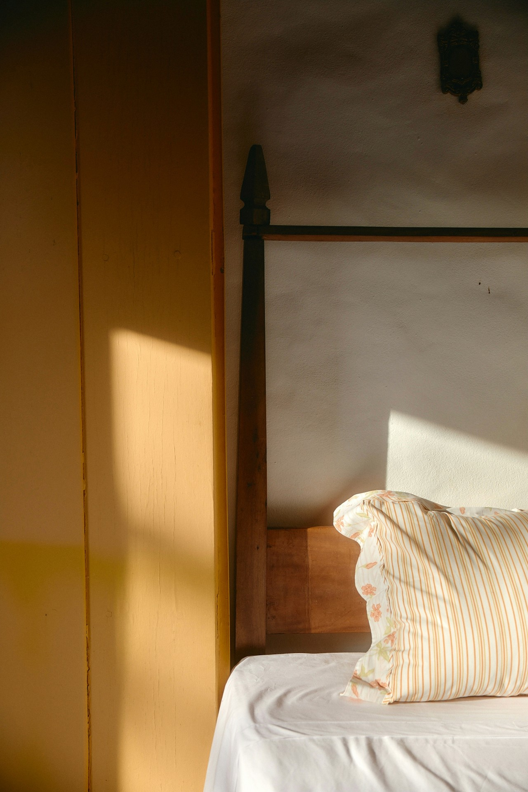
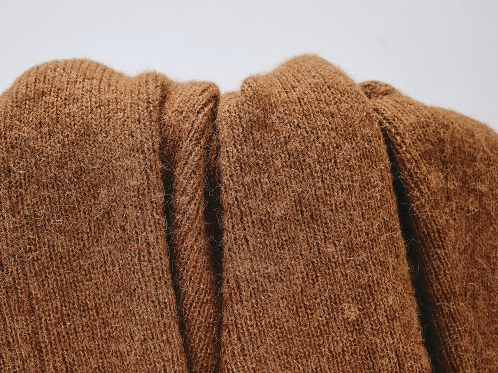
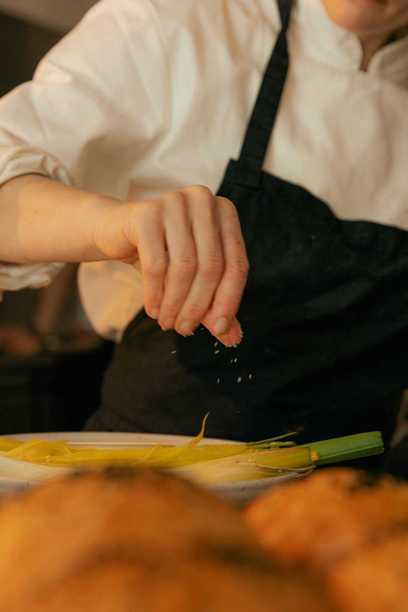

A new kind of robotics company.
Robotics has spent most of its life as a demonstration. Impressive in a lab, filmed in slow motion, explained in a language only engineers could follow, and almost never present in the rooms where real work actually gets done.
Most companies in this field still build for the lab. They lead with the hardware and the breakthrough, and they speak to other engineers. We do the opposite. We lead with your business, in plain language, about your problem. If automating a task does not produce a real return for your operation, we will not take it on. That discipline is not a limitation. It is the whole promise.
We own the entire stack: software, hardware, data, training, and model evaluation, so we can iterate faster than anyone else. When we do take something on, we own all of it. The hardware, the installation, the daily operation, and the support that keeps everything running long after the first day. You will never have to become a robotics expert or assemble a line of vendors to make it work. You show us where the repetitive work lives. We carry the rest.




Most of our customers start in the same place. They have a sense that something in their operation could be done better, and they are not sure what is possible or where to begin.
Tell us where the repetitive work lives. We will tell you plainly whether there is a case for automating it. If there is, we will build it, run it, and stand behind it.